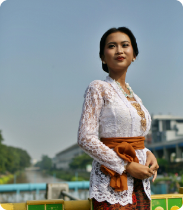
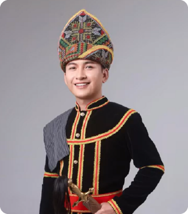
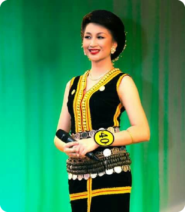
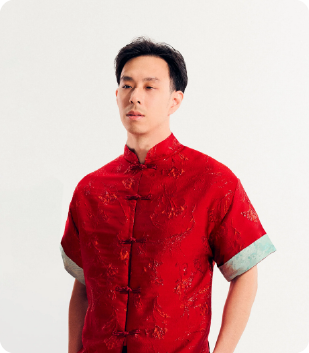
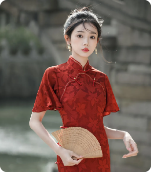
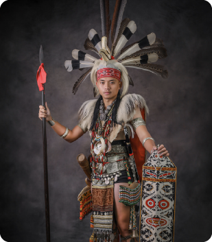
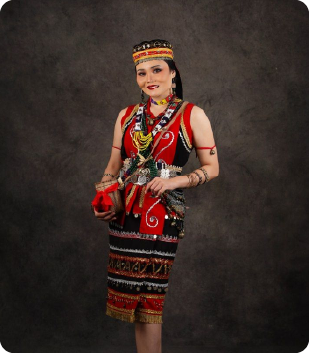
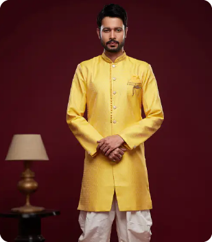
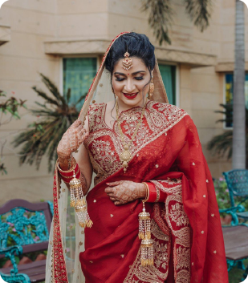

Since Malaysia is a multicultural nation: Malay, Chinese, Indian and hundreds of other indigenous groups of Malay Peninsula and Borneo, each has its own traditional and religious articles of clothing all of which are gender-specific and may be adapted to local influences and conditions.

A traditional Malay men’s attire, usually worn with a “sampin” and “songkok”, often seen during festivals and formal events.

A classic Malay women’s outfit featuring a loose-fitting blouse and long skirt, symbolizing modesty and elegance.

A traditional blouse-dress combination, often made from lace or silk, known for its graceful and feminine silhouette.

A traditional black velvet attire worn by Kadazan men, often decorated with golden embroidery. It is paired with souva trousers, a toogot waistband, and a siga headcloth, symbolizing cultural pride and status.

A short black velvet blouse worn by Kadazan women, usually matched with a long skirt, a himpogot silver coin belt, and a siung bamboo headpiece.

A traditional Chinese two-piece outfit with a short jacket and matching trousers, representing comfort and simplicity.

A slim-fitting Chinese dress known for its high collar and side slits, often made from silk with floral patterns.

A traditional sleeveless vest worn by Iban men, often made from animal skin or decorated cloth. It symbolizes bravery and is usually worn during cultural ceremonies or dances like the ngajat.

A ceremonial costume of the Iban people in Sarawak, adorned with beads, feathers, and handwoven fabric.

The traditional attire of the Bidayuh community, made with natural materials and decorated with beadwork.

An Indian men’s garment made from a long piece of cloth wrapped around the waist and legs, symbolizing purity and tradition.

A long, elegant fabric draped around the body, worn by Indian women, representing grace and cultural beauty.
© 2025 Syahreel Reza. All Rights Reserved. For Educational Purposes Only.